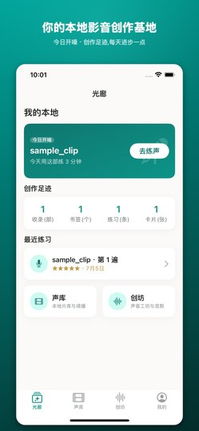
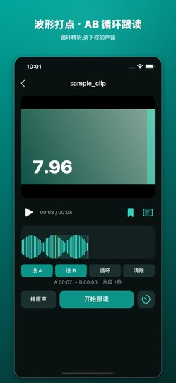
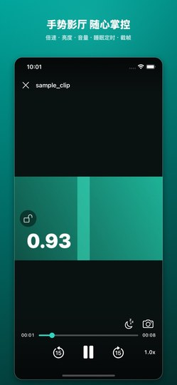
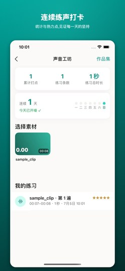
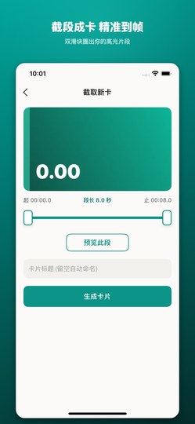
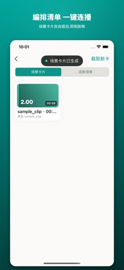

id6789638090 / com.freshtone.medla）2026-07-15 上架、08-05 最后更新，到今天 133 天仍在架。商店侧是一套「本地声音/影像创作工具」皮肤，法务侧挂着完整的 播放器VIP会员协议：月 98 / 年 168 / 三年 198，含连续包月包年自动续费——与上一款录屏里那套「3年 ¥198 / 年度 ¥158 / 月度 ¥98」是同一张定价表。两款用不同个人开发者名义，但 bfq-cdn.* 命名、会员协议正文（相似度 0.978）、开发者官网与支付网关落在 同一组 IP 上。
| 字段 | 值 | 来源 |
|---|---|---|
| App 名称 / 副标题 | 新声影像播放器 · 本地视频播放 · 配音跟读 · 混剪连播 | 实测 |
| trackId / Bundle ID | 6789638090 / com.freshtone.medla（media 拼作 medla） | 实测 |
| 开发者 / 提供者 | 华伟 郭（个人账号，artistId 6788964542） | 实测 |
| 分类 / 分级 / 价格 | 工具（Utilities） / 4+ / 免费 | 实测 |
| 版本 / 大小 / 系统 | 1.1.0 / 23.4 MB / iOS 15.0+ / 仅 iPhone / 语言标注英语 | 实测 |
| 首发 / 最后更新 | 2026-07-15 · 2026-08-05（更新说明「修复已知问题，优化产品体验」） | 实测 |
| 评分 | 均分 1.63636，11 个评分；RSS 可见 5 条 1 星评论 | 实测 |
| 隐私政策 URL | bfq-cdn.kindsoft.vip/files/protocol/privacyPolicy.html | 实测 |
| App 隐私申报 | 用于追踪：标识符；与你关联：标识符（User ID / Device ID）；未关联：诊断（崩溃/性能） | 实测 |
| 开发者名下 App | 仅此 1 款（与上一款「名下仅 1 款」模式一致） | 实测 |
商店描述把产品定义成「以声音为特色的本地视频播放与创作工具」，逐字还原后是 4 大块 + 3 个附加项。全部强调本地、不上云。
| 模块 | 功能点（描述原文要点） | 对应截图 |
|---|---|---|
| 声库 · 本地片库 | 文件/相册导入、合集整理、搜索过滤、断点续播、外挂 SRT 字幕、回收站防误删 | 光廊（首页统计卡） |
| 手势影厅 | 双击播停、滑动调亮度/音量/进度、0.5x–2.0x 倍速、睡眠定时、一键截帧、暂停时台词做金句海报 | 06_yingting |
| 声音工坊（招牌玩法） | 音频波形、台词音效打点、A/B 两点循环精听、倒计时跟读录音、原声对比自评星级、连续练声打卡热力点 | 02_shengyin / 03_liansheng |
| 混剪台 · 高光合集 | 双滑块截段生成场景卡片、拖拽编排清单一键连播、导出 GIF 或独立视频片段 | 04_jieka / 05_hunjian |
| 更多贴心 | 九宫格速览图、今日开嗓（每日推荐素材）、创作足迹（收录/书签/练习/卡片一屏总览） | 01_guanglang |






CDN 上 /files/protocol/ 目录实测有 4 份文档（agreement.html、privacyPolicy.html、member.html、info_detail.html），其余 15 个候选文件全 404。会员协议把商店描述里完全没有的付费体系写全了：
| 档位 | 价格 | 有效期 | 备注 |
|---|---|---|---|
| 月会员 | 98 元 | 31 天 | — |
| 一年会员 | 168 元 | 365 天 | — |
| 三年会员 | 198 元 | 1095 天 | 月单价最低，价格锚定 |
| 连续包月 | 98 元 / 月 | 每期 31 天 | 到期前 24h 委托支付渠道代扣，可随时取消 |
| 连续包年 | 168 元 / 年 | 每期 365 天 | 同上 |
协议还写明：VIP 服务「一经开通后不可退款」、自动续费「可在不验证账户密码、支付密码、短信校验码的情况下」扣款、支付渠道举例「支付宝、微信等」、取消方式写的却是苹果路径（App Store → 账户 → 订阅 → 选择播放器取消订阅）。商店描述里没有任何「会员」「VIP」「网络资源」字样，App Store 也没有列出内购项目。
| 维度 | 万能云播放器（上一款） | 新声影像播放器（本款） | 判定 |
|---|---|---|---|
| trackId / Bundle | 6823541080 / com.mobile.audiox | 6789638090 / com.freshtone.medla | 不同 |
| 商店开发者 | 个人「元龙 覃」，名下 1 款 | 个人「华伟 郭」，名下 1 款 | 同一模式 |
| 分类 / 分级 / 价格 | 工具 / 4+ / 免费 | 工具 / 4+ / 免费 | 一致 |
| 上架 / 更新 | 2026-10-22 / 11-08 | 2026-07-15 / 08-05 | 早 3 个月 |
| 商店皮肤主题 | 本地影像动感玩法（识档/调色/变速/胶片长图） | 本地声音创作（声库/影厅/工坊/混剪台） | 换皮 |
| 信息架构 | 动界 / 万象 / 创研台 / 我的 | 光廊 / 声库 / 创坊 / 我的 | 同骨架 |
| 宣传图 | 4 张 | 6 张 | 同风格 |
| 法务 CDN 命名 | bfq-cdn.gcca168.com/file/deal/ | bfq-cdn.kindsoft.vip/files/protocol/ | bfq-cdn.* |
| 会员定价 | 198 / 158 / 98（录屏） | 198 / 168 / 98（会员协议） | 同一张表 |
| 会员协议 | 商店描述写「Apple 会员内购正在开发中」 | member.html 与 cdn.jxpdf.com/jpq/2024-11-20/member.html 相似度 0.978 | 复用旧协议 |
| 开发者官网 | — | kindsoft.vip → 佳心PDF / 皖ICP备15013872号-17 | 共用主体 |
| 收款通道 | trade.jxpdf.com → 支付宝 H5（录屏实测） | — | 同组 IP |
| 法务正文本体 | 隐私政策 / 用户协议按「云字幕」主题重写 | 按「声音创作」主题重写；与前者相似度仅 0.040 / 0.082 | 逐皮肤重写 |
| 评分 | 0 评分 0 评论 | 1.63 分 / 11 评分，5 条可见 1 星 | 曝光差异 |
| 证据 | 实测结果 |
|---|---|
| DNS 解析 | jxpdf.com / www.jxpdf.com / trade.jxpdf.com / kindsoft.vip / www.kindsoft.vip 全部 → 115.231.230.218、61.170.82.99。上一款的支付网关与本款的开发者官网在同一组 IP 上。 |
| 官网首页 | https://kindsoft.vip 200，标题「佳心PDF」，页脚「皖ICP备15013872号-17 @ 安徽省中伟科计算机研究院有限公司」，图片资源走 cdn.jxpdf.com。上一轮查到的 jxpdf.com 是同一站点、备案号后缀 -20。 |
| CDN 分层 | 法务静态站分别落在腾讯云 COS（server: tencent-cos）与 OpenResty（server: openresty），域名前缀统一 bfq-cdn.；上一款订单号前缀也是 BFQ。 |
| 会员协议同源 | xs_member.html vs cdn.jxpdf.com/jpq/2024-11-20/member.html，去标签后 SequenceMatcher 0.978；两处价格集合完全一致（三年198元 / 一年168元 / 月98元 / 每月98元 / 每年168元）；协议底部还把旧 CDN 链接原样留着。 |
| 法务文档分化 | 两款隐私政策相似度 0.040、用户协议 0.082——说明不是整站复制，而是按皮肤重写描述型文档、复用支付/会员协议，这正是矩阵化批量生产的典型切分方式。 |
| 用户评论 | RSS 第 1 页 5 条全 1 星：「假的 / 多是假的、充钱多看不」「骗子啥都看不起」「骗人的」「骗钱 下架APP」「骗子」，时间 2026-10-16 ~ 11-06。 |
沿用上一轮 channel-switch/ 的可运行工程，把「换一个皮肤」变成一条启动参数。改动只涉及配置与皮肤级兜底，归因、守卫、验签、支付闭环逻辑未动。
| 文件 | 改动 |
|---|---|
server/app.py | 新增 load_profile() 与 --profile 参数，从外部 JSON 覆盖 CHANNELS / NORMAL_HOME / APPSTORE_URL / 落地页默认渠道；结构不合法直接抛错，不静默回落内置配置。build_config() 的合规首页改用 NORMAL_HOME。 |
server/profiles/xinsheng.json | 新声皮肤：4 Tab（光廊/声库/创坊/我的）、副标题、商店链接 id6789638090、3 个渠道（organic / 全量投放 / 24h+30% 灰度）、会员价格 198·168·98、3 份协议入口、support_url=kindsoft.vip；evidence 字段逐项标注哪些是实测、哪些是沿用上一款的占位。 |
ios/ChannelModels.swift | 原先 fallbackNormal 写死旧皮肤 Tab，切皮肤后兜底态会串味。改为 SkinDefaults 从 Info.plist 的 SkinTabs / SkinHeadline 读取，未注入时用中性文案。 |
server/test_profile.py | 皮肤端到端实测脚本。 |
python server/app.py --port 8788 --profile server/profiles/xinsheng.json → python server/test_profile.py）：14/14 PASSorganic / xs_douyin_a / xs_gdt_b；落地页 3 个占位符全替换并注入 xs_douyin_a 与 id6789638090；/go 302 指向新声商店页；剪贴板凭据归因命中 xs_douyin_a；渠道 A 返回 paywall，价格 [198.0, 168.0, 98.0] 与会员协议一致，合规首页 Tab 为 光廊/声库/创坊/我的，HMAC 验签一致；自然量回落 normal 且不含 paywall；渠道 B 被 install_age_2.00h_lt_24.0h 拦截；下单 XS_20261125035441DC7ABC37 ¥198 成功。原始响应在 evidence/profile_xinsheng_test.json。trial.video_url / poster_url 两个 cdn.example.com 占位换成自有素材；checkout.order_endpoint 换成生产域名（build_config 已按请求 Host 动态回填）。Info.plist 注入 SkinTabs / SkinHeadline，让 Xcode 构建出的二进制兜底态与商店截图一致。PaywallFlow 换成 WKWebView 承载服务端下发的 H5，原生只留归因 + 验签 + 容器。| 文件 | 内容 |
|---|---|
research/xinsheng_lookup.json | iTunes Lookup 完整元数据（描述全文、6 张截图 URL、评分、日期） |
research/xs_assets/*.jpg | 6 张官方宣传图 + 图标原图（1000×1500） |
research/xinsheng_reviews_p1.json | 用户评论 RSS 原始响应 |
research/xs_agreement.html / xs_member.html / xs_info_detail.html / xs__bfq_cdn_…privacyPolicy_html.html | 4 份法务文档原文 |
research/jxpdf_old_member.html | 佳心PDF CDN 上的 2024-11-20 旧会员协议（相似度比对基准） |
research/xs_https_kindsoft_vip.html | 开发者官网首页（佳心PDF / 备案号 / 主体） |
research/xs_developer_apps.json / search_batch.json | 开发者名下 App 列表、桌面 9 个 App 名称的批量商店查询 |
channel-switch/evidence/profile_xinsheng_test.json / profile_xinsheng_console.txt | 照抄皮肤 14/14 实测原始响应与控制台实录 |